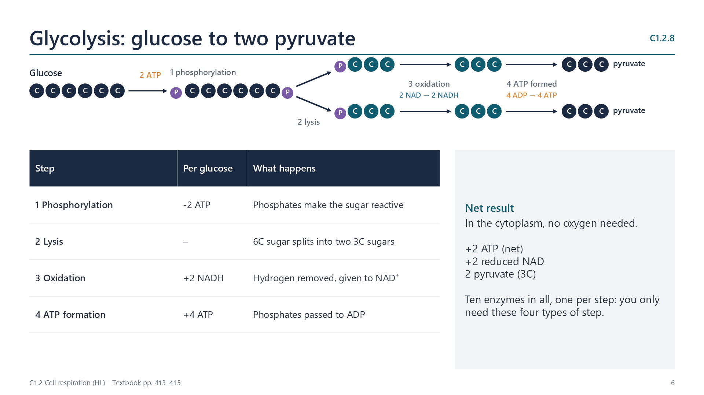
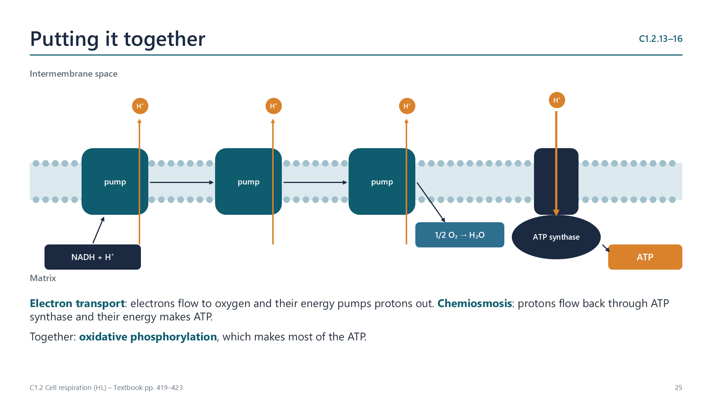

Written for this site from the class slides, with textbook page references for each statement. The chapter is on pages 412–424 of the course textbook. Image credits are on slide 34.
Oxidation is loss of electrons; because a hydrogen atom carries an electron, removing hydrogen (dehydrogenation) oxidizes a substance. Respiration oxidizes glucose step by step. NAD accepts the hydrogen and is reduced, carrying it to the electron transport chain. Oxidation and reduction always occur together (redox).
C1.2.8
Glycolysis
pp. 413–415

In the cytoplasm, glucose is phosphorylated by 2 ATP, split into two 3C sugars, oxidized (2 NAD reduced) and converted to two pyruvate, making 4 ATP by substrate-level phosphorylation. Net yield: 2 ATP and 2 reduced NAD. Each step has its own enzyme.
C1.2.9
Lactate regenerates NAD
pp. 415–416
Without oxygen, reduced NAD cannot be oxidized by the electron transport chain. In human muscle, pyruvate accepts its hydrogen and becomes lactate, regenerating NAD+ so that glycolysis can continue. The net yield is only 2 ATP per glucose.
C1.2.10
Yeast, baking and brewing
pp. 416–417
Yeast uses the same glycolysis, but regenerates NAD by converting pyruvate to ethanol and carbon dioxide. In baking, carbon dioxide makes dough rise and the ethanol evaporates in the oven; in brewing, ethanol is the product wanted.
Aerobic respiration
C1.2.11
The link reaction
pp. 417–418
In the mitochondrial matrix, pyruvate is decarboxylated (CO2 released) and oxidized (NAD reduced). The 2C acetyl group joins coenzyme A as acetyl-CoA. Fatty acids from lipids are also cut into acetyl groups that enter the same way.
C1.2.12
The Krebs cycle
pp. 418–419
The acetyl group joins oxaloacetate (4C) to form citrate (6C). Two decarboxylations and four oxidations (dehydrogenations) regenerate oxaloacetate. Each turn gives 2 CO2, 3 reduced NAD, 1 reduced FAD and 1 ATP; the cycle turns twice per glucose.
C1.2.13
Reduced NAD and the electron transport chain
pp. 419–420
Reduced NAD from glycolysis, the link reaction and the Krebs cycle passes a pair of electrons to the first carrier of the chain in the inner membrane, becoming NAD+ again. This transfers its energy to the chain.
C1.2.14
The proton gradient
pp. 420–421
As electrons pass from carrier to carrier they release energy in small steps, which is used to pump protons from the matrix into the small intermembrane space. The inner membrane is impermeable to protons, so a steep gradient builds up.
C1.2.15
Chemiosmosis
pp. 421–422

Protons flow back into the matrix through ATP synthase. The flow turns part of the enzyme and provides energy to join ADP and phosphate: oxidative phosphorylation. This makes most of the ATP from aerobic respiration.
C1.2.16
Oxygen as the final acceptor
p. 422
At the end of the chain, oxygen accepts electrons and protons from the matrix, forming metabolic water. This keeps electrons flowing; without oxygen the chain stops and only glycolysis can produce ATP.
C1.2.17
Lipids and carbohydrates as fuels
pp. 423–424
Lipids give about twice as much energy per gram as carbohydrates, because they contain less oxygen and more hydrogen and carbon to oxidize. Fatty acids enter respiration as acetyl-CoA, not through glycolysis, so lipids can only be respired aerobically; carbohydrates can also be used anaerobically.
Videos
Select a video to play it here. Select it again to close it.
Print this guide and complete it as you work through the slides and videos. It asks for your own explanations, so close the notes while you try each section.
A printable worksheet covering all eleven statements, from quick recall to data questions and a longer answer. It has 40 marks and takes about 40 minutes, or you can do one section at a time.